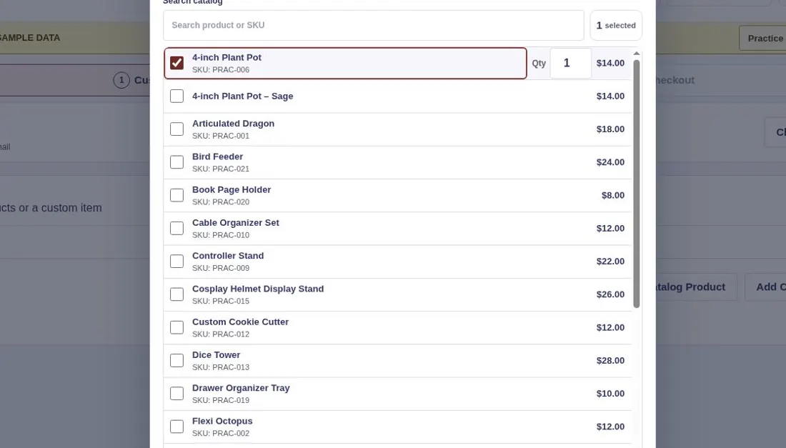
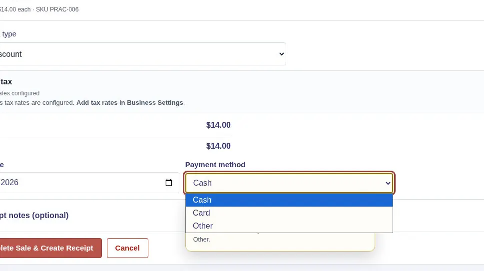
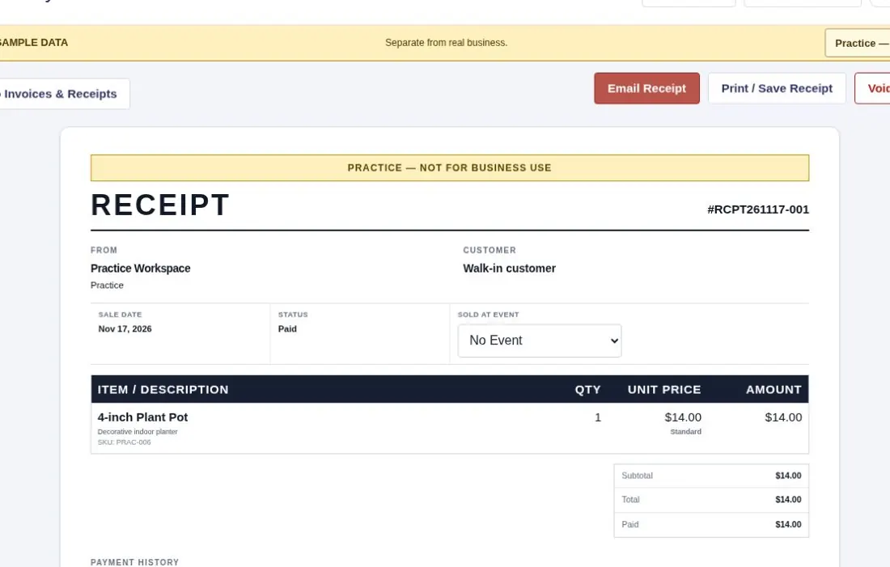

Quick Sale
Record a paid sale and create a receipt.
Watch: Complete a Quick Sale
Recorded in Practice — Sample Data. Follow along in Practice without changing real Business records, or switch to Business to enter your own information.



Make a Quick Sale
- Choose New Sale → Quick Sale.
- Choose Catalog items or add a permitted custom item.
- Adjust quantity, price, discount and taxes as needed.
- Select a payment method and complete the sale.
A Customer is optional for walk-in sales.
Send a receipt
Open the completed receipt to print, save PDF or email it. You can enter a one-time email address.
Sell offline
Open Quick Sale while online before a show. Offline sales queue on the device and sync after reconnection. Receipt emails are attempted after successful sync. Offline selling guide.
Correct a completed sale
Use the available Void/Refund workflow. Card-processor refunds may require separate confirmation in the processor account.